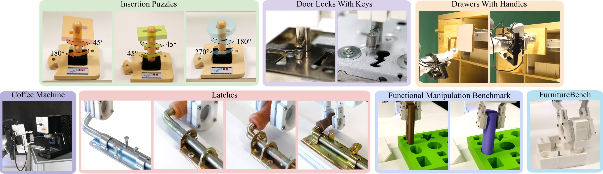
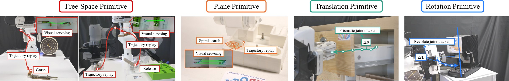

From a Single Demonstration to a General Policy for Contact-Rich Manipulation
Technische Universität Berlin Science of Intelligence
The International Journal of Robotics Research · 2026
Abstract
We present a four-stage Learning from Demonstration (LfD) pipeline that incrementally constructs a general policy for multi-stage contact-rich manipulation from a single human demonstration. The pipeline is built around a crucial inductive bias—environmental constraints—that separates general task structure from hard-to-model instance-specific details. We show that, on top of this inductive bias, simple and well-established components are already sufficient to build an interactive LfD system that generalizes to unseen variations in object pose, local geometry, and contact conditions under real-world uncertainty. We validate the system on seven real-world multi-stage contact-rich manipulation tasks and achieve over 90% success across tasks. These results establish environmental constraints as fundamental building blocks for efficient generalization in learning from demonstration.
Contact-Rich Tasks
Seven real-world tasks, learned from one demonstration per task.

Real-world experiments
Door locks with keys
Coffee machine
Latches
Drawers with handles
Functional Manipulation Benchmark
FurnitureBench
More experiment and augmentation videos: full playlist ↗
Methodology
A policy follows environmental constraints instead of replaying a fixed trajectory.

Open-Source Code & Simulation
The same four EC primitives also run in simulation. Preview clips below are placeholders for the upcoming simulation videos.